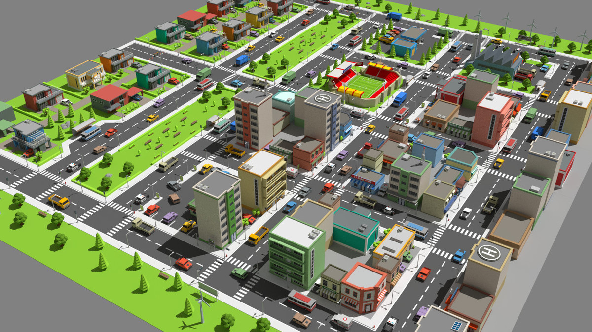

의자 제어 XML 스키마 문서인 SEM을 분석하고, XML 명령 생성 클래스와 TCP/UDP 전송 클래스를 제작해 Unity 콘텐츠에서 호출 가능한 플러그인 구성
2017 - 2018 / Unity, C#, WinForms
그루크리에이티브랩 콘텐츠 개발
Unity 기반 VR/콘텐츠 기능과 C# 응용 프로그램 개발을 통해 실무 구현 흐름을 익힌 초기 경력 프로젝트
역할 클라이언트 개발
도구 Unity · C# · WinForms
범위 기능 구현 · 연동 · 샘플 제작
요약
프로젝트 구성
오브젝트 배치, 회전, 화재 확산, 건물 파괴, 도로 타일 기반 BFS 테스트 기능 구현
동영상 제어, 그래프 시각화, 서버 저장/불러오기, 라이선스 확인 등 응용 프로그램 기능 개선
상세 01
SEM 문서 기반 4D 의자 제어 모듈
메인 작업은 의자 제어 XML 스키마 문서인 SEM을 분석해 제어 모듈을 제작한 것. 샘플 VR 콘텐츠는 제작한 모듈을 시연하고 검증하기 위한 부가 개발
기간2017.07 - 2017.11
참여개발자 2명
역할4D 의자 제어 모듈 개발
제어 모듈
의자 제어 XML 스키마 문서인 SEM을 기준으로 XML 데이터 생성기와 TCP/UDP 전송기 구현.
동작 데이터
6축 모션, 진동, 바람, 열, 물 분사 등 의자 기능을 XML 명령 데이터로 표현.
차량 이벤트
타겟의 이동 방향/이동량, 회전 방향/회전량을 계산해 6축 모션 데이터로 변환.
시연 콘텐츠
제어 모듈 시연을 위한 동물 이동/도망/공격 AI, 마취총 상호작용, 물 대포/파티클 등 샘플 기능 제작.
상세 02
소방차 경로 탐색 AI 연구용 도시 빌드 맵툴
기간2018.06 - 2018.09
참여개발자 2명
역할타일형 도시 맵툴 기능 개발

편집 조작
자유 카메라 제어와 배치 전/후 회전 기능을 구현해 타일형 도시 맵을 편집할 수 있도록 구성.
오브젝트 배치
바닥 타일, 건물, 자동차, 나무, 사람 등 도시 환경을 구성하는 오브젝트 배치 기능 구현.
시뮬레이션 요소
화재 발생, 화재 번짐, 건물 파괴 기능을 넣어 화재 상황이 있는 도시 환경을 구성.
경로 테스트
AI 적용 전 도시 환경 검증을 위해 도로형 타일을 따라 목적지까지 이동하는 BFS 길찾기 기능 구현.
상세 03
VR 어지럼증 솔루션 분석 프로그램 기능 개선
VR 어지럼증 유발 요소 측정과 분석 결과 관리를 위한 응용 프로그램의 사용자 기능, 데이터 표시, 서버 연동 기능 개선
기간2018.01 - 2018.09
참여개발자 2명
역할WinForms 기능 개선 및 추가 개발
사용자 기능
회원가입, 로그인, 로그아웃 기능과 결제/라이선스 확인 기능 개선.
영상/그래프
동영상 플레이어 API를 이용한 영상 조작 기능과 점 분포/꺾은선 그래프 등 데이터 시각화 구현.
서버 연동
어지럼증 요소 추출 데이터와 분석 결과 데이터를 REST API/protobuf 기반으로 저장/불러오기.
데이터 처리
저장 데이터 암호화/복호화와 서버 통신 흐름 처리, C# 응용 프로그램 유지보수 경험 확보.
추가 지원
모바일 VR 시력 검사 콘텐츠
모바일 VR과 삼성 Gear 기반 시력 검사 콘텐츠에서 게임패드 연결, 컨트롤, UI 기능 개선 작업을 지원.